Case Study 1: Sprint Intake Control
Payments Portfolio
The Problem
Four platforms shared a sprint cadence, but intake was verbal. Unscoped work entered after planning, stories were written after the sprint started, and acceptance criteria arrived mid-build. Slack and standups had become the backlog.
The Fix
- Intake gate: not mapped + not sized = not in the sprint
- Story + Given/When/Then template tied to the future-state map
- One weekly dashboard replacing three sources of truth
- One shared release/compliance tracker, closed only when Compliance = Yes and Test = passed UAT ID
My Role
Owned requirements readiness for the portfolio, including intake analysis, story refinement, acceptance criteria, process mapping, UAT coordination, traceability, and release-readiness tracking. Worked across Product, Engineering, QA, and Compliance to move work from intake through implementation and validation.
The Outcome
- Measurable drop in last-minute sprint adds over two quarters
- A failed UAT case now always produces a linked defect, retest, and traceable close
- Leadership works from one dashboard instead of three local files and a Slack thread
Artifact 1: Jira, Payments Portfolio

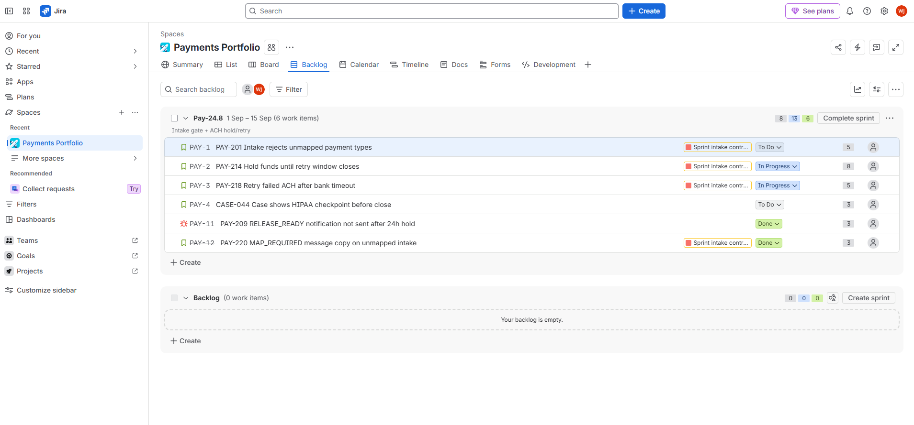

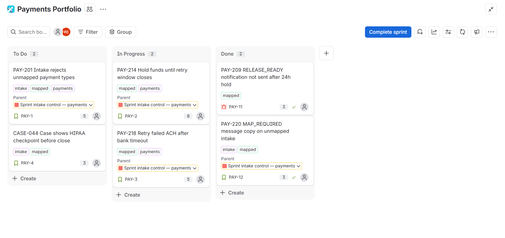

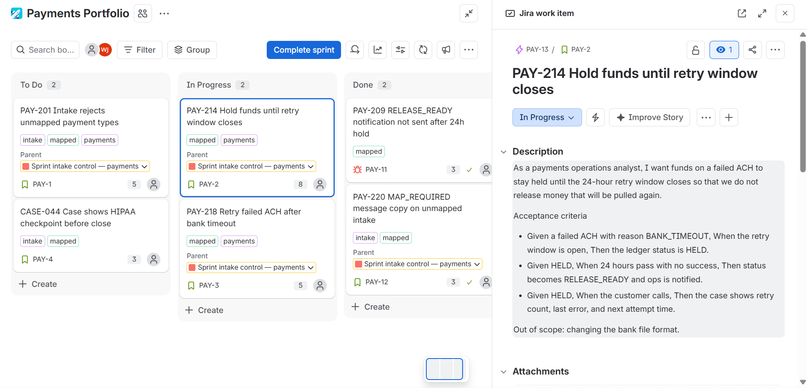
Artifact 2: Azure DevOps, Payments

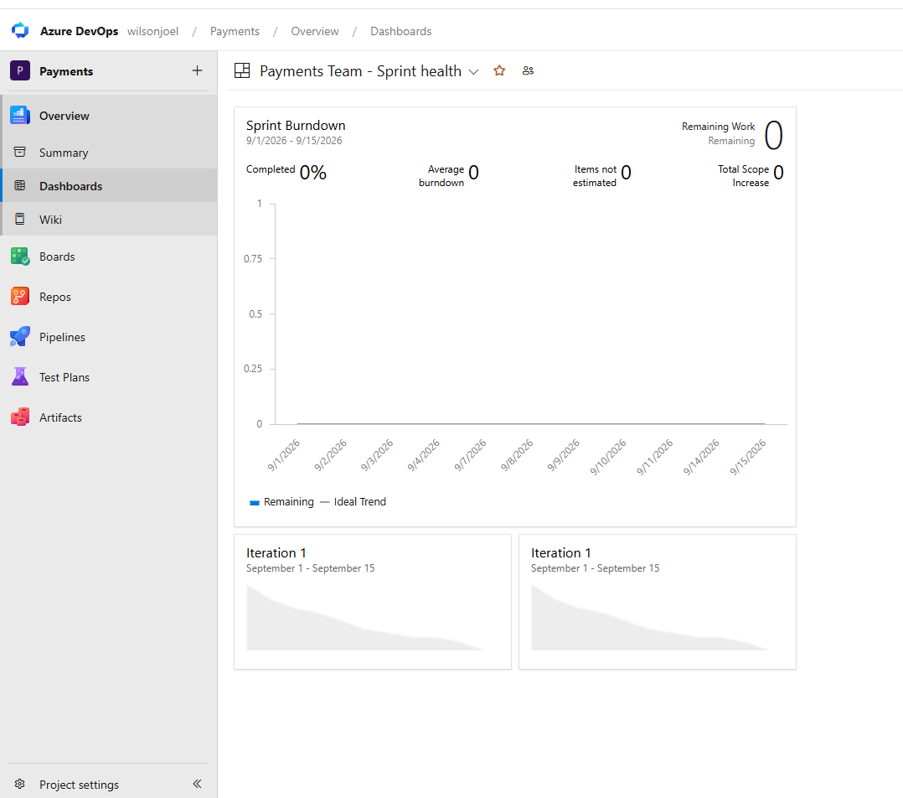

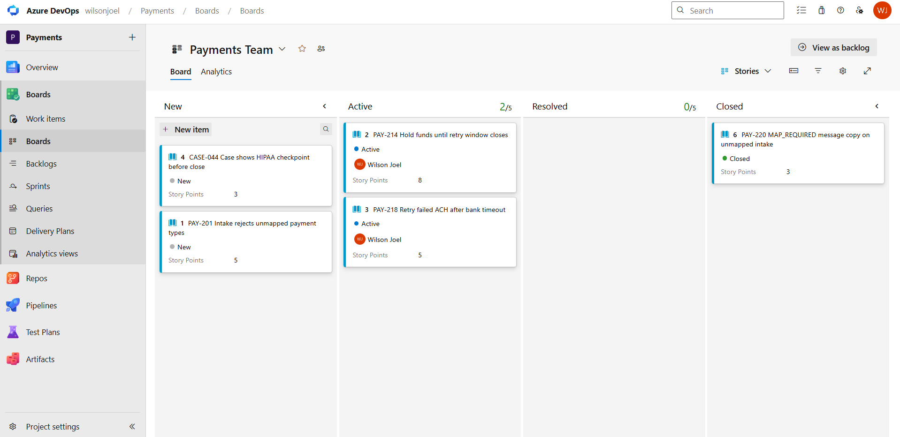
Artifact 3: Release / Compliance Tracker

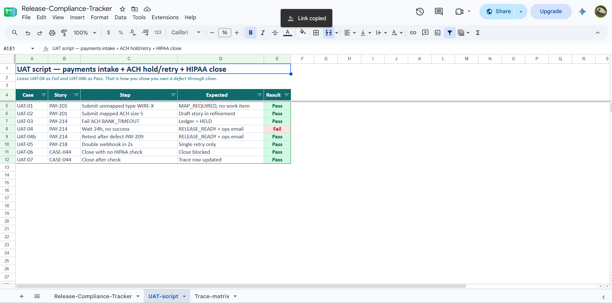

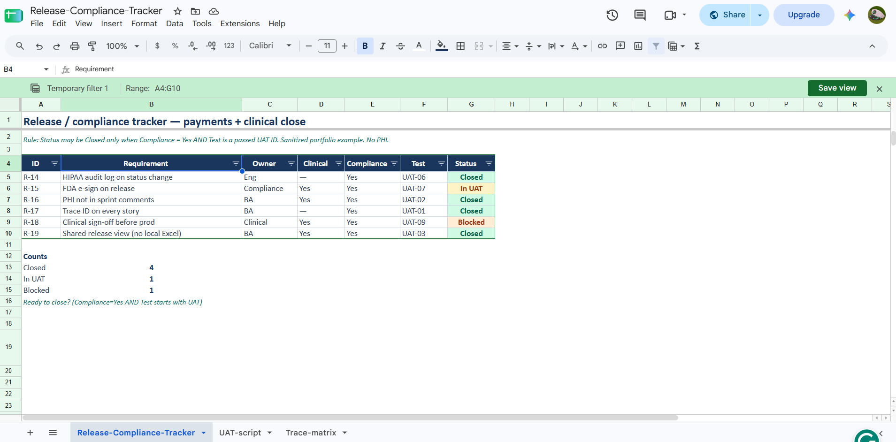

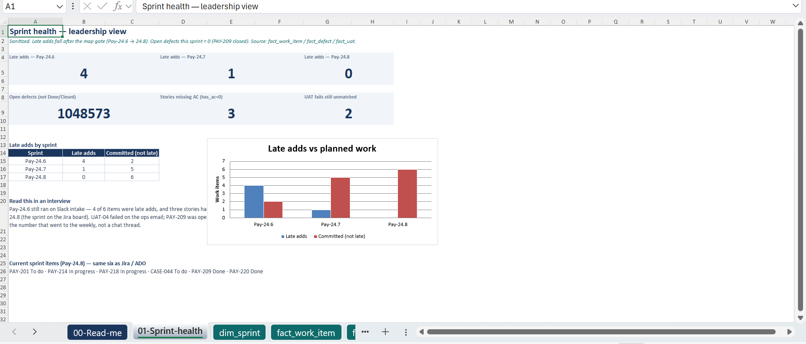

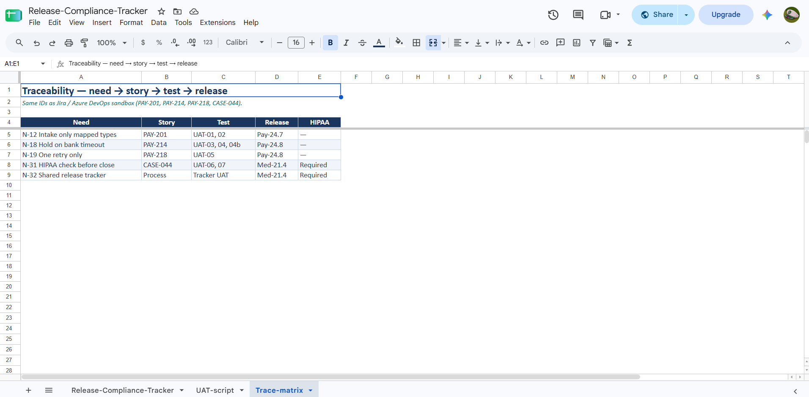
Artifact 4: As-Is / To-Be Process Maps

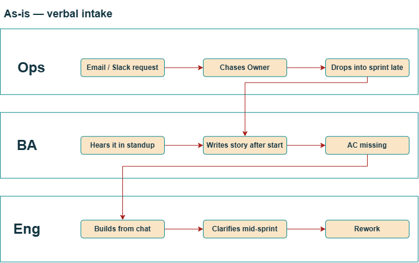

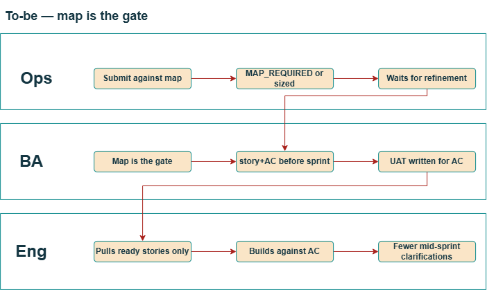
Case Study 2: Systems Integration Requirements
CRM → Billing → Reporting
The Problem
Business and reporting processes depended on data moving between CRM, billing, and reporting systems. Before development could proceed, the integration requirements needed to be clearly defined across business rules, data mapping, interface requirements, data flows, exception handling, and downstream validation. The challenge was to translate business needs into clear integration requirements that development and QA could build and test against.
My Role
As the Business Analyst, I worked across business, functional, data, and integration requirements to make the work clear and build-ready.
- Gathering and documenting business and functional requirements
- Translating stakeholder needs into user stories and acceptance criteria
- Defining source-to-target data mappings
- Documenting API/SFTP rules and interface requirements
- Mapping data flows between connected systems
- Identifying exception and error scenarios
- Defining validation requirements
- Supporting UAT and downstream data validation
- Working with stakeholders, development, and QA to resolve questions and defects
- Confirming that delivered functionality aligned with documented requirements
System / Data Flow
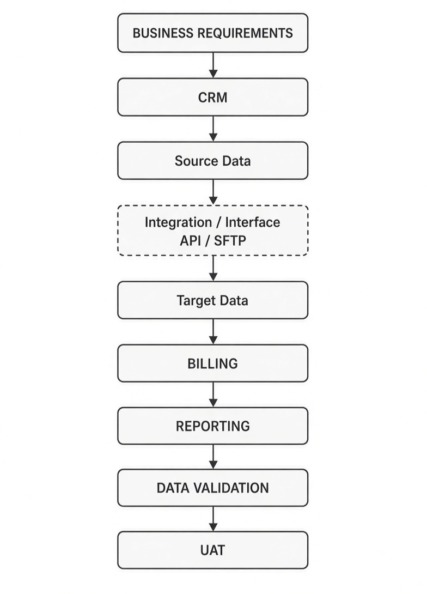
At each stage, the focus was on making the expected data movement, business rules, exceptions, and validation requirements clear before and during development.
Source-to-Target Data Mapping
| Source System | Source Field | Target System | Target Field | Business Rule |
|---|---|---|---|---|
| CRM | Customer ID | Billing | Customer ID | Must match the expected customer record |
| CRM | Customer Status | Billing | Account Status | Map approved status values |
| Billing | Invoice ID | Reporting | Invoice ID | Maintain a unique identifier |
| Billing | Invoice Amount | Reporting | Amount | Validate numeric value and expected format |
| Billing | Invoice Date | Reporting | Billing Date | Apply the required date format |
| Billing | Invoice Status | Reporting | Invoice Status | Map source values to reporting values |
Illustrative example using sanitized field names and business rules.
Integration Requirements
- 01 Data Transfer: approved data transfers between source and target systems according to the defined interface requirements.
- 02 Required Data: required fields are present and validated before a record is accepted for downstream processing.
- 03 Data Mapping: source fields map to target fields according to documented business and transformation rules.
- 04 Exception Handling: records that fail validation are identified and routed for review, not treated as successfully processed.
- 05 Traceability: results are traceable from the source record through downstream validation and UAT.
Exception Scenarios
| Scenario | Expected Behavior |
|---|---|
| Required field missing | Record fails validation and is flagged for review |
| Invalid value | Record is rejected or routed for review |
| Source/target mismatch | Mapping or transformation rule is reviewed |
| Duplicate record | Duplicate is identified and prevented from creating incorrect downstream data |
| Downstream reporting mismatch | Source data, mapping, and transformation are reviewed |
UAT & Data Validation
UAT scenarios were derived from the documented requirements and acceptance criteria, confirming that expected data reached the downstream system correctly and that exception scenarios behaved as defined.
| UAT Scenario | Expected Result |
|---|---|
| Valid customer record | Record transfers successfully |
| Missing required field | Record is flagged as an exception |
| Invalid status | Record is rejected or flagged for review |
| Billing/reporting mismatch | Data discrepancy is identified for investigation |
When defects were identified, they were reviewed with the appropriate stakeholders, corrected, retested, and validated against the original requirement.
Outcome
The integration requirements were documented in a format that gave development and QA clearer expectations for data movement, validation, exception handling, and acceptance. I supported UAT through production go-live by defining test scenarios, coordinating execution, validating downstream reporting data, and working with stakeholders to resolve defects and requirement questions.
Business need → integration requirements → development → validation → UAT → release